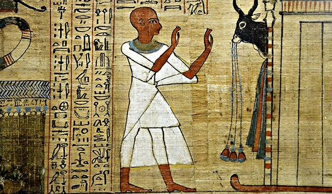

🏛️ Antiquité (-3000 → 500)
Dans l’Égypte antique, la médecine devient plus organisée et structurée. Les Égyptiens rédigent des textes médicaux détaillés, appelés papyrus, qui décrivent des maladies, des traitements et même des techniques chirurgicales. Le célèbre médecin Imhotep (vers -2600) est souvent considéré comme le premier médecin de l’histoire. Il introduit une approche plus rationnelle, bien que la médecine reste liée à la religion.

En Grèce antique, un tournant majeur se produit avec Hippocrate (vers -460). Il rompt avec les explications surnaturelles et affirme que les maladies ont des causes naturelles. Il développe la théorie des quatre humeurs (sang, bile jaune, bile noire, phlegme), qui restera dominante pendant des siècles. Il insiste également sur l’observation clinique, posant les bases de la médecine moderne.
Dans l’Rome antique, la médecine est largement influencée par les travaux de Galien (IIe siècle). Ses recherches sur l’anatomie et la physiologie dominent la pensée médicale pendant plus de mille ans. Les Romains contribuent aussi à la santé publique avec la construction d’aqueducs, de bains publics et d’hôpitaux militaires.
| Période | Personnage | Découverte / contribution |
|---|---|---|
| Égypte | Imhotep | Organisation de la médecine, papyrus médicaux |
| Grèce | Hippocrate | Théorie des quatre humeurs, observation clinique |
| Rome | Galien | Recherches en anatomie et physiologie, santé publique |